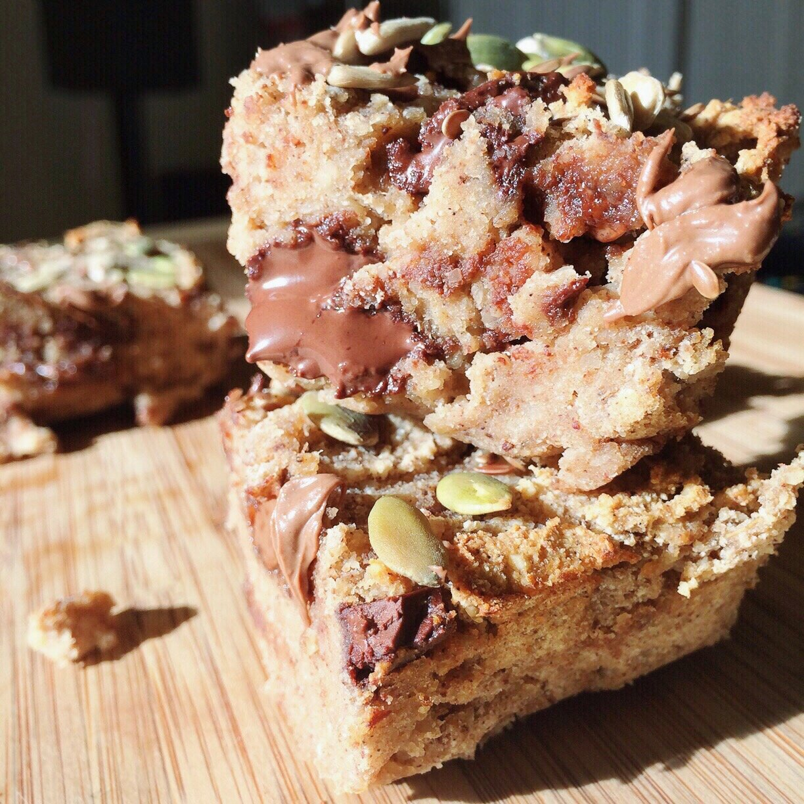
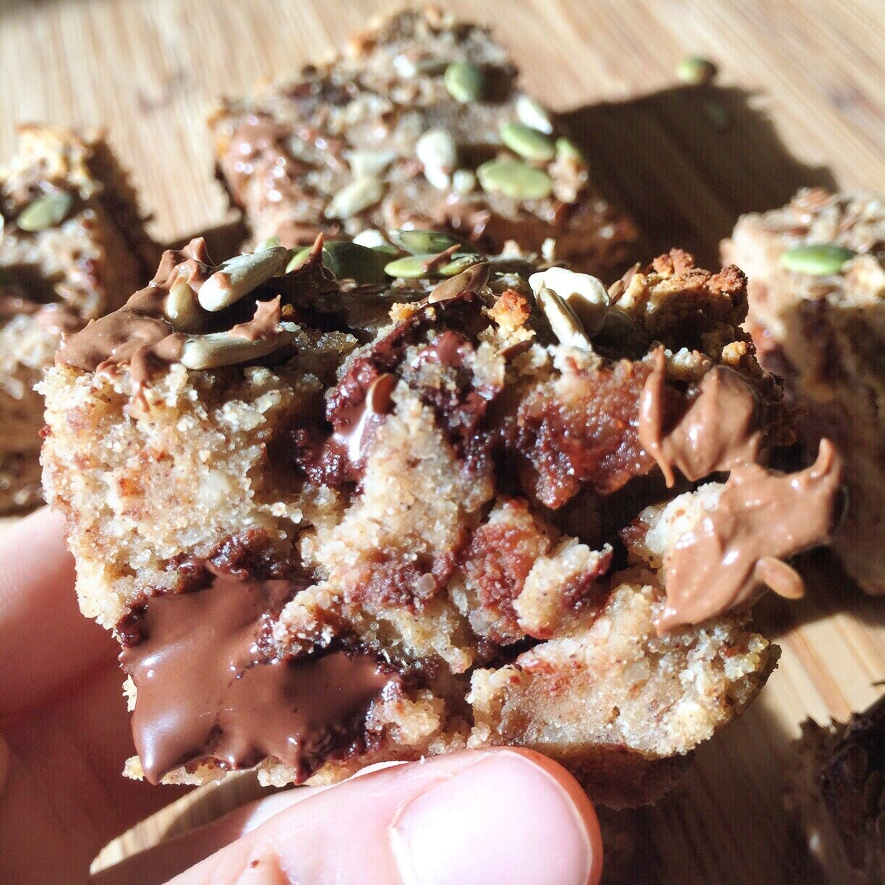
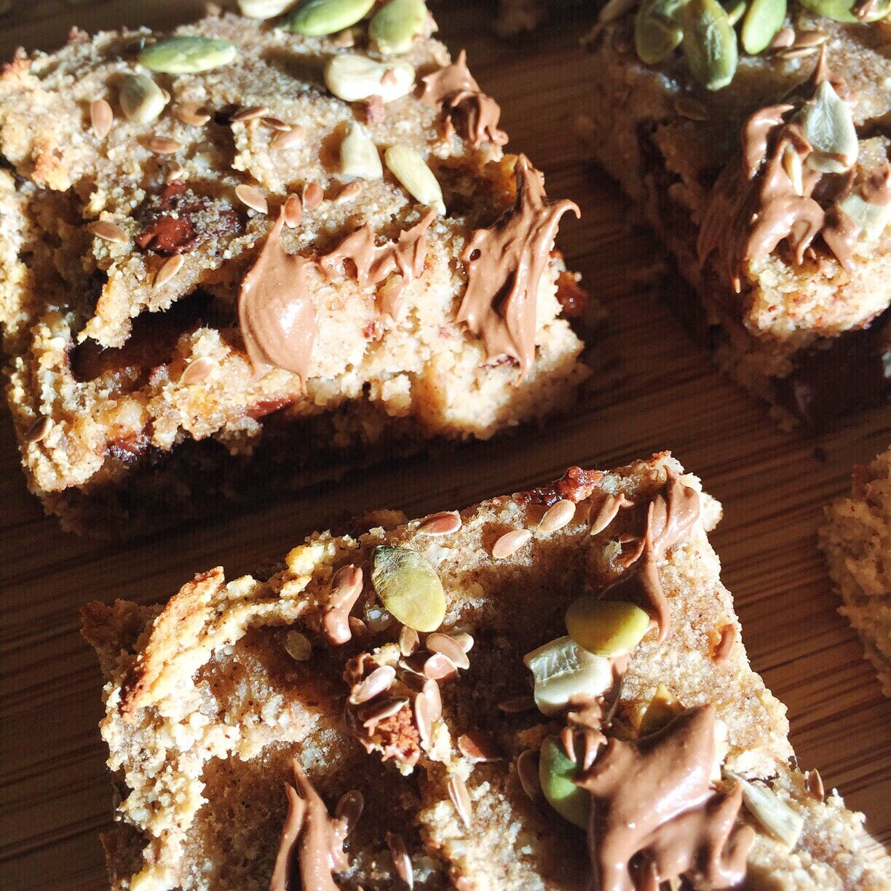
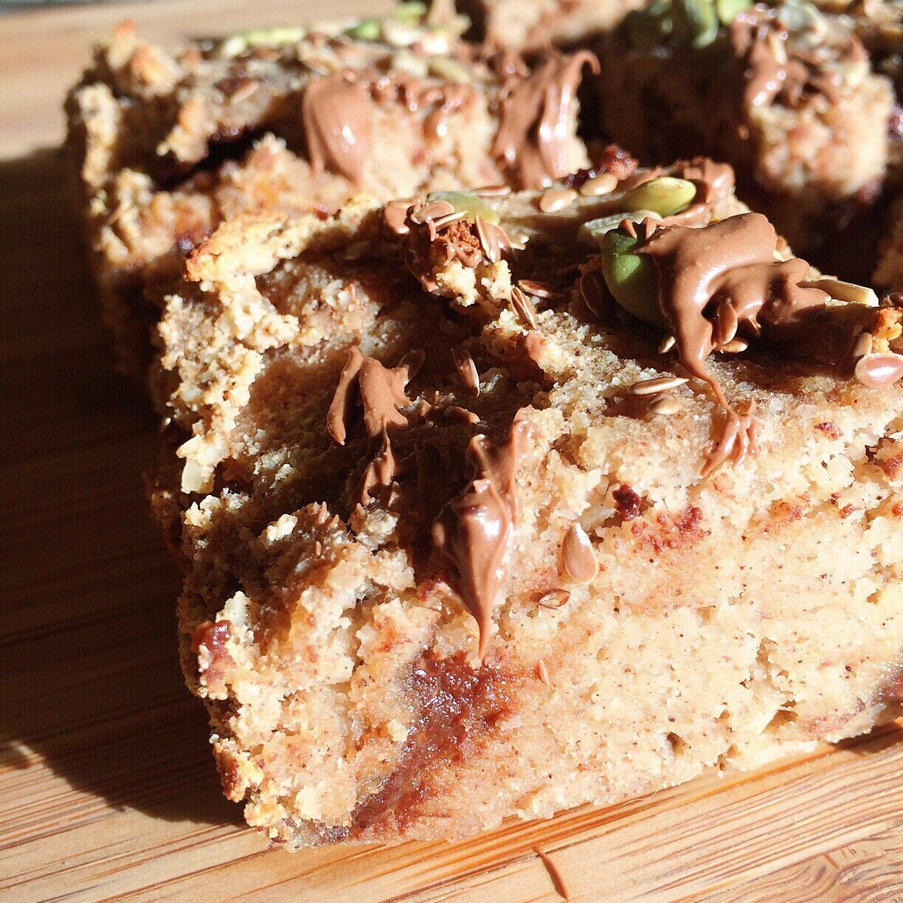

Chocolate Chip Gingerbread Bars (vegan, gluten free)


Chocolate Chip Gingerbread Bars have me in heavennnn. Boyfriend asked me why I didn't save these for the cookbook because they're so good hahah but the book is made and I can't go back. So enjoy! :)
Chocolate Chip Gingerbread Bars (vegan, gluten free)
Serves: 9
-
3 ripe bananas
-
1.5 cup almond meal/flour
-
1/2 cup coconut flour
-
1/4 cup unsweetened almond milk
-
1/4 cup sugar free syrup (or maple syrup)
-
1 TBSP vanilla extract
-
1 tsp baking powder
-
1.25 tsp cinnamon
-
1.25 tsp ginger
-
1/2 tsp cloves
-
1/2 tsp allspice
-
1/2 tsp nutmeg
-
1/2 cup dark chocolate chips
Mash the bananas in a medium bowl. Mashmashmash. Then add alllll the remaining ingredients except for the chocolate chips. Mix everything until even - be sure the spices especially get mixed evenly. Then add the chocolate chips and lightly food into the batter. Spray an 8x8 baking dish (or 9x4, whatever size really) with nonstick spray and evenly put your batter inside - should be thick. (Here I also topped mine with pumpkin seeds, flax, and sunflower seeds for crunchy but it's totally optional). Bake at 350F for 30 mins. Let cool 10 mins, then cut into 9 slices and enjoy!!

